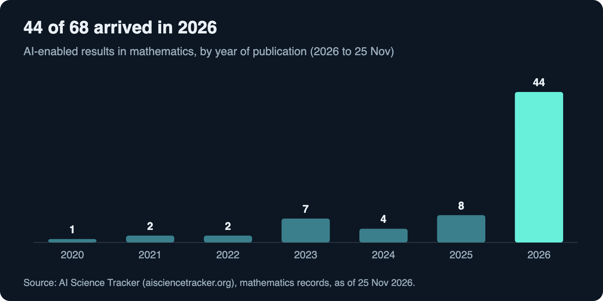
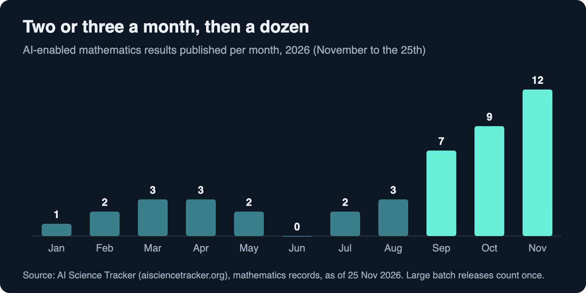
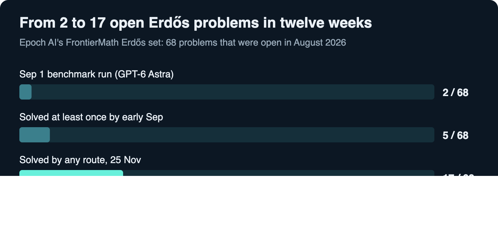
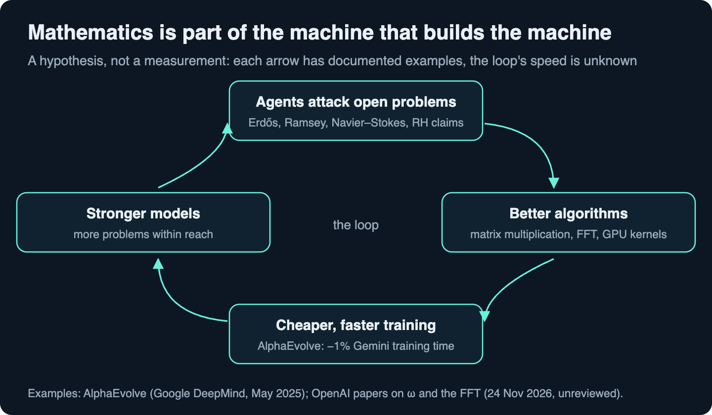

Pick an open problem. Hand it to an agent. Let a machine check the proof. Repeat that a few thousand times, and the curve stops looking like a line.
For three centuries, mathematics moved at the speed of a few thousand people thinking very hard. This autumn it started moving at the speed of compute.
I don't say that because of one headline. I say it because I keep a ledger. My AI Science Tracker records AI-enabled discoveries, each checked against its original source. In mathematics, the catalog held one or two entries a year until 2023. In 2026, up to 25 November, it holds 44.

The monthly view is more striking. Through the summer, the rhythm was two or three results a month. Then September brought seven, October nine and November, before the month was even over, twelve.

A catalog is not a census, and I want to be honest about how this one is built. My collection got broader in 2026, which inflates the jump. In the other direction, a single release counts once even when it contains hundreds of results. OpenAI's October batch is one row in my chart. It holds 730 manuscripts.
One autumn, in dates
It helps to see the sequence written down:
- 1 August. OpenAI says its Astra model produced ten new mathematical results, including solutions to three Erdős problems (Quanta).
- 4 September. Anthropic reports that Claude formalized Fermat's Last Theorem in Lean, a proof checker that accepts nothing on trust.
- 8 September. OpenAI claims a solution to the Navier–Stokes problem, one of the Millennium Prize Problems. Community review continues.
- 6 October. OpenAI releases a public catalogue of 730 manuscripts in 375 families, about 42% of the headline results formalized in Lean, from roughly 4,000 problems it posed. The average result took about three hours of compute. OpenAI also gave $5 million to a Simons Foundation effort to have mathematicians check AI-produced work.
- 20 November. Levent Alpöge, a mathematician at Anthropic, releases a Lean library of about 17 million lines that he states proves the Riemann hypothesis, and its generalization for Dirichlet L-functions, developed with Claude. The next day the Lean FRO and the Mathlib Initiative certify that the statement is the standard one and that the proof passes several independent checkers. No human-readable proof exists yet, and the Clay Institute still lists the problem as open.
- 23 November. Anthropic and OpenAI each release Lean-certified proofs of VP ≠ VNP, the algebraic cousin of P versus NP, according to Scott Aaronson.
- 24 November. OpenAI posts papers claiming that the exponent of matrix multiplication is exactly 9/4, and a Fourier transform with fewer operations than the FFT (Dealroom summary). Neither has been reviewed by experts yet.
Every item on that list deserves caution. Several will be narrowed, corrected or found to depend on something subtle. But look at the shape: the Riemann hypothesis, Navier–Stokes and a cousin of P versus NP, all in one season, all with machine-checked artefacts. A year ago, the serious debate was whether language models could do olympiad geometry.
The benchmarks say the same thing
Benchmarks are where enthusiasm goes to be measured. In August 2026, Epoch AI asked Thomas Bloom, who maintains the Erdős problems database, to pick 68 problems that were still open. On 1 September, the best model solved two of them under the benchmark rules. Most frontier models solved none.
By 25 November, 17 of the 68 were solved. Twelve came from OpenAI's October release alone.

The wider Erdős database tells a similar story. Bloom counted 111 problems moving from open to solved between 2024 and August 2025. By August 2026, Quanta reported 565 solved against 652 open. A Google DeepMind agent resolved nine of 353 open problems at a cost of a few hundred dollars each. Noga Alon, one of the great combinatorialists alive, has stopped working on Erdős problems.
Some of that progress is literature search: an agent finds that a problem was quietly solved in a 1987 paper nobody connected to it. That still counts for something. Mathematics had a discovery problem as well as a proof problem, and agents are good at both.
Why this time is different: the checker
The bottleneck in mathematics was never ideas. It was checking them. A referee can spend a year on a long proof, and still miss the gap.
Lean changes the economics. A proof that compiles against Mathlib has been checked by a small kernel, not by a tired human. That turns a large part of mathematics into something machine learning loves: a search problem with a perfect reward signal. AlphaGo got superhuman because the rules of Go decide who won. Lean decides whether a proof is valid in the same unambiguous way.
The checker has limits, and they matter. It certifies that the proof matches the formal statement. Humans still have to confirm that the statement says what we mean, which is why the Lean community checked the Riemann hypothesis statement before anything else. Understanding lags too: Alpöge writes that he has not yet mastered parts of his own proof. A correct proof that nobody understands is a strange new object in mathematics. It is still a proof.
Pick a topic. Hand it to an agent.
Here is the part that convinced me, because it happened on my own laptop.
This month, in the evenings, I picked two niche problems out of my own tracker. In one, an agent combined a 2024 table of known results with a fresh AI-assisted improvement and classical constructions. It built an explicit set of seven mutually orthogonal Latin squares of order 478, one more than the published table lists. An independent checker accepts it. In the other, an agent worked on a variant of Erdős problem #650 and produced a draft bound, part of it formalized in Lean, which is now with specialists.
Neither result has been reviewed by an expert. Either may turn out to be known, minor or wrong. That is not the point. I am not a professional mathematician, and a year ago I could not have attempted either.
At the same time, five agents on my laptop are contributing to a public, Lean-checked attack on P versus NP. Nobody expects that one to fall soon. What matters is that anyone can join with one line pasted into a coding agent.
Now multiply that by every curious engineer with a subscription. Erdős alone left more than a thousand problems. Number theory, combinatorics and analysis have long tails of questions that nobody had time for. Agents have time. That is how you get an explosion: not one genius machine, but millions of cheap, checkable attempts on problems that were waiting for attention.
The recursive part
Here is why I use the word singularity and not just boom. Mathematics is part of the machine that builds the machine.

Matrix multiplication sits at the heart of training a neural network. In May 2025, Google DeepMind's AlphaEvolve found a way to multiply 4×4 complex matrices with 48 multiplications, improving on a 1969 record. It also sped up a key matrix-multiplication kernel in Gemini by 23%, which cut Gemini's training time by 1%, and found a scheduling rule that recovers 0.7% of Google's worldwide compute. Small numbers, but they compound: every model trained more cheaply is a better tool for the next round of search.
Now OpenAI claims the matrix multiplication exponent is 9/4. I need to be careful here. Results about asymptotic exponents are usually "galactic": the constants are so large that they never beat ordinary methods at sizes a GPU will ever see. If the claim holds, it is a theoretical earthquake, not a faster training run next year.
The tighter loop is quieter. Every proof that Lean accepts is perfect training data, with no human labelling needed. Models trained on verified mathematics get better at mathematics, which produces more verified mathematics. That loop needs no breakthrough to keep turning. It only needs compute.
A singularity, with honest caveats
By math singularity I don't mean machines that know everything. I mean the point where the rate of new results is set by compute, not by human attention. On that definition, the evidence points one way: the counts are rising, the cost per result is falling to hours of compute and hundreds of dollars, and a formal checker turns claims into objects anyone can verify.
The limits are real too:
- Many results are on the long tail. Solving an Erdős problem nobody worked on for forty years is real progress. It is not the same as inventing new mathematics on the scale of a Grothendieck.
- Claims run ahead of review. OpenAI's own catalogue warns that some unformalized results could have issues. Unreviewed is not the same as wrong, but it is not right yet either.
- Meaning is still a human job. A machine-checked proof of the wrong statement is worthless, and a proof nobody understands teaches us less than it should.
- Compute and energy are finite. A loop that runs on data centres runs into power grids.
Here is a bet I am willing to make in public: by the end of 2027, most problems that move from open to solved in the Erdős database will credit an AI system. Check back and hold me to it.
What to do with this
If you are a mathematician, the job shifts toward choosing questions, writing precise statements and judging which results matter. Taste becomes the scarce resource. If you are anyone else, the advice from my previous post stands: pick a problem, hand it to an agent, and watch how far it gets before it fails.
Mathematics was the slowest-moving and most human of the sciences. It is becoming one of the fastest. The singularity, if it comes, will not arrive with a robot on stage. It will look like a changelog.